A full circle of Iceland on the Ring Road. The Reykjanes peninsula, Snæfellsnes ('Iceland in miniature'), Akureyri in the north, the waterfalls and lava formations of Lake Mývatn, the quiet East Fjords, a zodiac among the icebergs of Jökulsárlón, Skaftafell under Europe's largest glacier, the black beaches and waterfalls of the south coast, and the Golden Circle back to Reykjavík. Our original plan hiked to the 2021 lava field near Grindavík; that area has been restricted since the 2023 to 2025 eruptions, so day 2 now explores the rest of the peninsula instead. Day 3 is a long drive, about 6 hours with stops.
See it for yourself
Photos from the journey
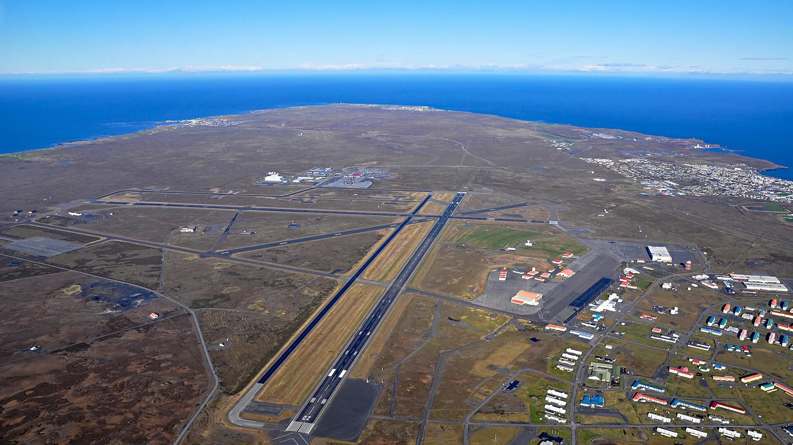
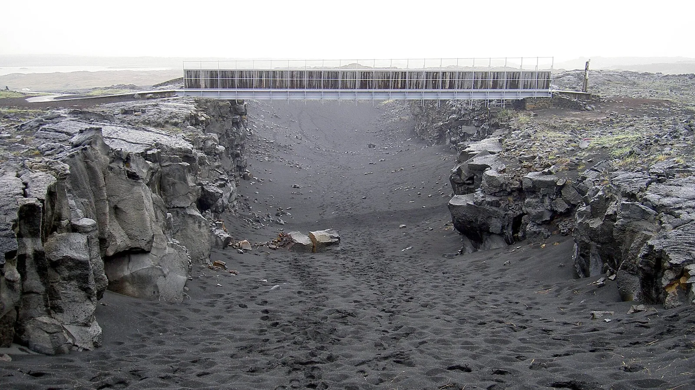
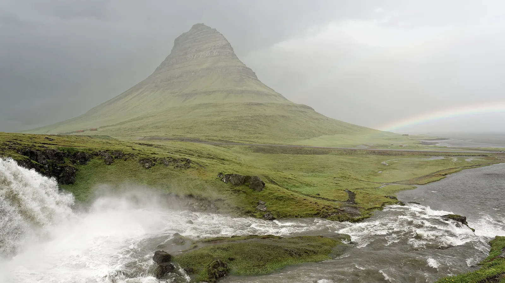
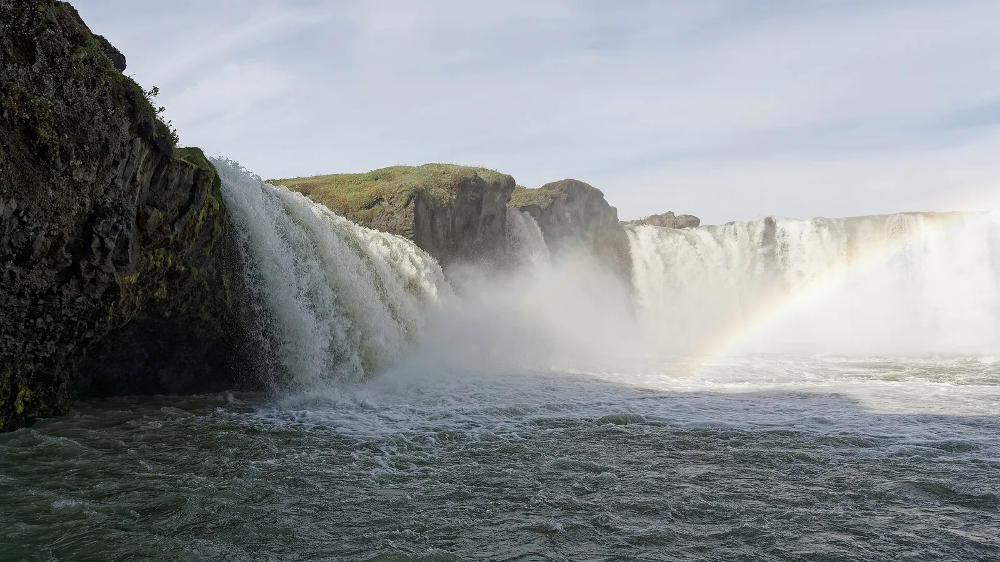
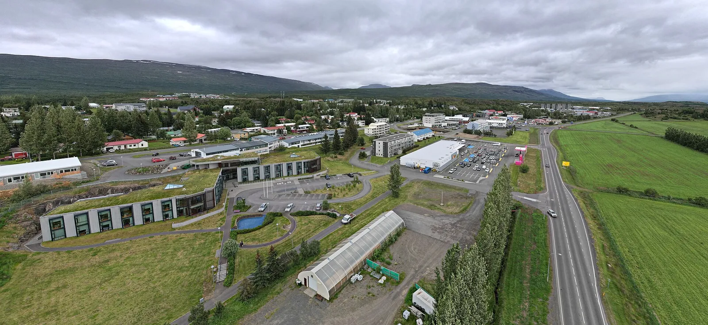
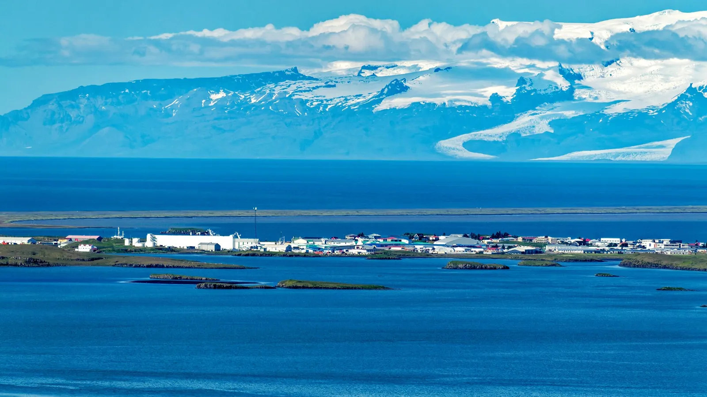
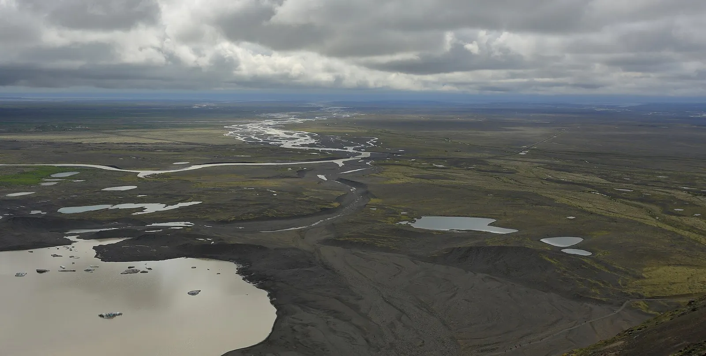
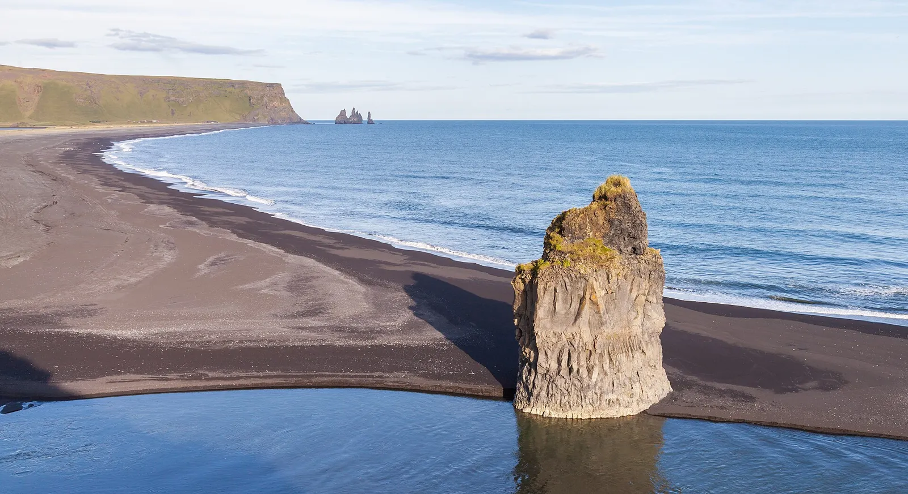
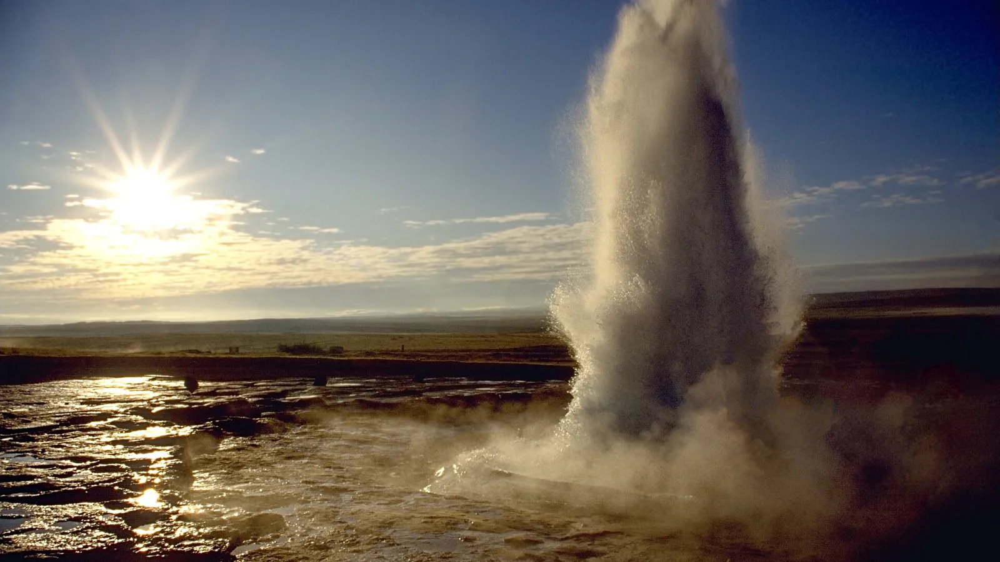
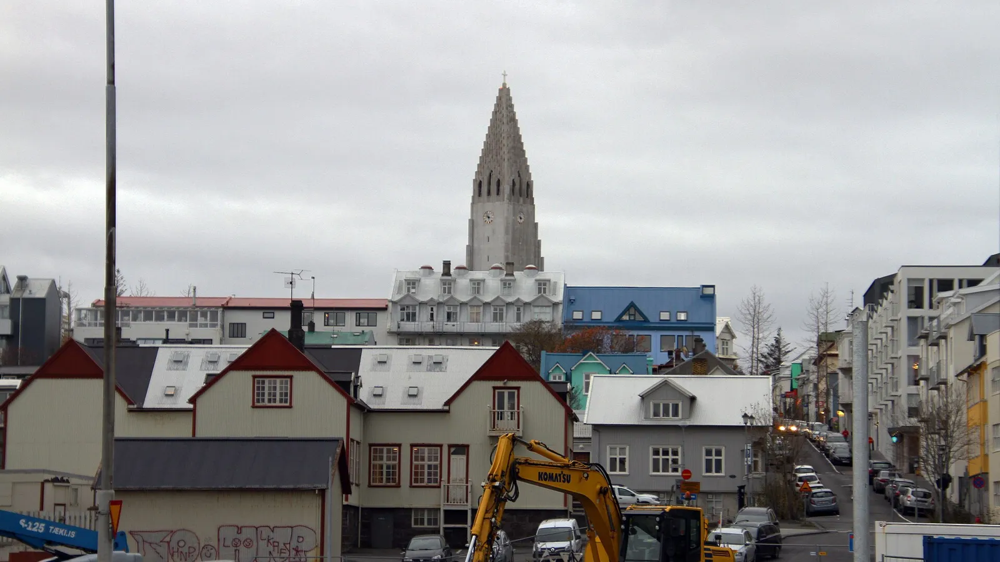
Where you go
The journey on one map
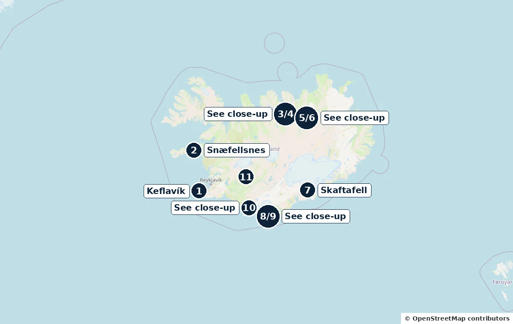
KeflavíkReykjanesSnæfellsnesAkureyriGoðafossMývatnDettifossVopnafjörðurEgilsstaðirReyðarfjörðurJökulsárlónSkaftafellVíkSkógafossSeljalandsfossGullfossThingvellirReykjavík
Day by day, in short
Daily travel brief
Distances are by road for the whole day. The full plan with timings comes with your detailed itinerary.
-
1
Arrive in Iceland
- Buy snacks at the airport supermarket; prices are lower than in the countryside.
-
2
-
3
Snæfellsnes peninsula and on to Akureyri
- The longest drive of the trip; stops every 1 hour 30 minutes.
-
4
Goðafoss, Mývatn and Dettifoss
Dimmuborgir Hverfjall Námafjall
- Dimmuborgir and Hverfjall crater: boots with grip; the gravel path is loose.
- Mývatn means 'midge lake': in June and July a head net helps.
-
5
-
6
Jökulsárlón and Fjallsárlón
- Zodiac on Jökulsárlón: zodiac tours run from about May to October.
- Wear the flotation suit provided on the zodiac.
-
7
Skaftafell National Park
- Glacier walk: never walk on a glacier without a guide.
- Glacier walks have a minimum age of about 10 years.
-
8
-
9
The Golden Circle to Reykjavík
- Keep back from Strokkur's edge; the water is boiling.
-
10
Reykjavík and fly home
- The Blue Lagoon has closed at times during the Reykjanes eruptions; we check before booking.
- Ask for a VAT refund on wool and design purchases.
Local know-how
Travel hacks from our desk
Hotel deposit
Use a credit card for the deposit or pre-authorisation at check-in, never a forex or debit card. Forex cards cannot hold funds, many hotels refuse them, and a credit-card hold is released faster.
Cards and cash
On card machines, always choose to pay in Icelandic krónur (ISK), never in INR. Iceland is almost cashless; cards work even at remote fuel pumps (a PIN is needed).
Pickpockets
Busy stations, trams and squares are pickpocket hotspots. Keep passports in the hotel safe, carry a copy, and wear your bag in front in crowds.
Plugs, water and meal times
Plugs are the two round-pin type C and F at 230 volts (Switzerland uses type J; a type C plug fits). Tap water is safe to drink. Lunch is about 12:00 to 14:00 and dinner from about 18:30.
Reynisfjara and the beaches
Sneaker waves at Reynisfjara and other south-coast beaches have swept visitors away. Stay well back from the water's edge and never turn your back to the sea.
Volcanic areas
Eruptions on the Reykjanes peninsula since 2021 have closed roads and areas around Grindavík. Follow safetravel.is and your guide's instructions.
Weather
Wind and rain change by the hour. Waterproof jacket and trousers, layers and walking boots, even in summer.
When to go
Best time to visit for this journey
Mid-June to mid-August.
June to August: all roads open, puffins, midnight sun and every tour running. For northern lights, a shorter south-coast winter tour works better.
The package
What's included
Included
- 9 nights with breakfast
- Guided small-group transport around the Ring Road
- Jökulsárlón zodiac
- Skaftafell guided hike
- Airport transfers
- 24/7 support from Blue Diamond Voyage
Not included
- International flights
- Schengen visa
- Glacier walk, lagoons and whale watching
- Lunches and dinners
- Travel insurance
The detailed itinerary
Some journeys are planned. Ours are crafted.
The full 10-day plan is ready: hour-by-hour timings, drive times, temple dress codes, food for your diet and a route map for every day. Tell us your dates and your city, and we'll send it to you on WhatsApp, shaped around you.
- Hour-by-hour timings
- A route map for every day
- Hotel and room details
- Visa and entry steps
- Vegetarian and Jain dining
24/7 travel desk+91 97148 59797+91 98242 21400
Photo and map credits
- Keflavík International Airport: SuperJet International, CC BY-SA 2.0, via Wikimedia Commons
- Bridge Between Continents: Chris 73, CC BY-SA 3.0, via Wikimedia Commons
- Kirkjufell: Jakub Hałun, CC BY 4.0, via Wikimedia Commons
- Goðafoss: Jakub Hałun, CC BY 4.0, via Wikimedia Commons
- Egilsstaðir: Eysteinn Guðni Guðnason, CC BY-SA 4.0, via Wikimedia Commons
- Höfn: Holger Uwe Schmitt, CC BY-SA 4.0, via Wikimedia Commons
- Skaftafell: Martin Falbisoner, CC BY-SA 4.0, via Wikimedia Commons
- Reynisfjara: Diego Delso, CC BY-SA 4.0, via Wikimedia Commons
- Strokkur: Andreas Tille, CC BY-SA 3.0, via Wikimedia Commons
- Hallgrímskirkja: Hyppolyte de Saint-Rambert, CC BY-SA 4.0, via Wikimedia Commons
- Maps: © OpenStreetMap contributors; road routes by OSRM.